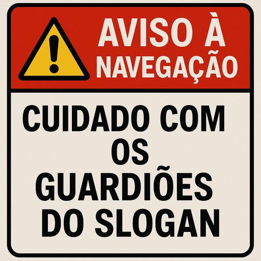

Publicado em 2025-06-18 11:15:19
Há por aí uma elite — bem instalada, cheia de pergaminhos e benesses do sistema — que navega pelo LinkedIn como quem patrulha mares sagrados. Acreditam-se detentores da verdade última, empossados da sua prosápia académica, institucional ou empresarial, prontos a distribuir likes condescendentes ou críticas ferozes... especialmente contra quem ousa pensar diferente.
Mas o grave não é só criticarem — é combaterem novas ideias com velhos slogans.
A cada proposta disruptiva, lá vêm eles com os mantras do passado:
🧱 “Isso não é realista.”
🧱 “Sempre foi assim.”
🧱 “Já tentaram e falhou.”
🧱 “É muito bonito, mas o mundo não funciona assim.”
Como se o mundo estivesse a funcionar tão bem assim!
Como se repetir fórmulas gastas fosse sinónimo de sabedoria.
Como se inovar fosse ofensa.
🔍 Estes são os guardiões do imobilismo.
Repetem chavões como dogmas sagrados, esquecendo que todas as grandes mudanças pareceram utopias antes de serem realidades.
É preciso lembrar que os verdadeiros construtores do futuro foram — e serão sempre — os que ousaram pensar fora da corrente. Os que enfrentaram a tempestade com ideias novas, não com âncoras do passado.
🛑 Por isso, navegadores do novo, cuidado com os faróis falsos!
Eles não iluminam — ofuscam.
Eles não guiam — desviam.
Eles não salvam — encalham ideias no recife do conformismo.
🌊 Mas quem traz ventos de mudança não se curva a marés passadas.
Segue, mesmo que sozinho, porque toda transformação começa com um primeiro barco a romper o nevoeiro.
Artigo escrito por Augustus Veritas